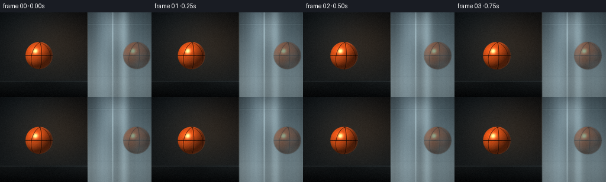
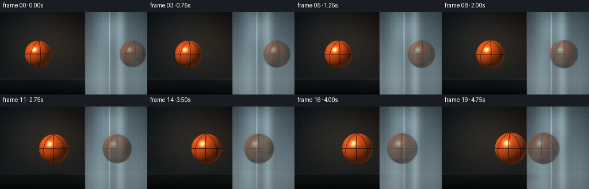
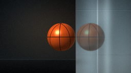
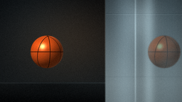

CODING AGENTS AS PIXEL WORLD MODELS
traex/DeepSeek-V4.1-Flash · phygen_064
点击播放 · 原生 RGB 像素
逐轮保存的候选
回放视频、检查图与代码变化。
每份候选均可单独播放。实际图片检查记录在下方工具轨迹中。
候选 01播放与检查图
点击播放 · 原生 RGB 像素


展开代码变化
--- 上一保存版本
+++ 本次保存版本
@@ -0,0 +1,352 @@
+from pathlib import Path
+
+import numpy as np
+from PIL import Image, ImageFilter
+from scipy.ndimage import gaussian_filter
+
+import artifact_io
+
+
+WIDTH = 256
+HEIGHT = 144
+FRAMES = 20
+FPS = 4.0
+SUPERSAMPLE = 4
+
+WALL_X = 148.5
+FLOOR_Y = 116.0
+
+
+def smoothstep(edge0, edge1, value):
+ x = np.clip((value - edge0) / (edge1 - edge0), 0.0, 1.0)
+ return x * x * (3.0 - 2.0 * x)
+
+
+def normalized(vector):
+ vector = np.asarray(vector, dtype=np.float64)
+ return vector / np.linalg.norm(vector)
+
+
+def build_background():
+ sw = WIDTH * SUPERSAMPLE
+ sh = HEIGHT * SUPERSAMPLE
+ x = (np.arange(sw, dtype=np.float64) + 0.5) / SUPERSAMPLE
+ y = (np.arange(sh, dtype=np.float64) + 0.5) / SUPERSAMPLE
+ xx, yy = np.meshgrid(x, y)
+
+ # Deep studio wall with a restrained warm pool of light behind the ball.
+ top = np.array([0.025, 0.034, 0.043])
+ bottom = np.array([0.085, 0.105, 0.115])
+ blend_y = np.clip(yy / 125.0, 0.0, 1.0)[..., None]
+ background = top * (1.0 - blend_y) + bottom * blend_y
+
+ glow_x = 92.0
+ glow_y = 54.0
+ glow = np.exp(-(((xx - glow_x) / 80.0) ** 2 + ((yy - glow_y) / 57.0) ** 2))
+ background += glow[..., None] * np.array([0.115, 0.070, 0.032])
+
+ haze = np.exp(-(((xx - 45.0) / 72.0) ** 2 + ((yy - 18.0) / 72.0) ** 2))
+ background += haze[..., None] * np.array([0.030, 0.052, 0.064])
+
+ # Polished metal panel: broad reflected bands, fine vertical brushing,
+ # a soft overhead light source, and a bright machined leading edge.
+ wall_mask = smoothstep(WALL_X - 0.8, WALL_X + 0.5, xx)
+ wall_y = np.clip(yy / 118.0, 0.0, 1.0)
+ wall = (
+ np.array([0.225, 0.275, 0.300]) * (1.0 - wall_y[..., None])
+ + np.array([0.445, 0.505, 0.525]) * wall_y[..., None]
+ )
+
+ local_x = xx - WALL_X
+ band_a = np.exp(-((local_x - 28.0) / 17.0) ** 2)
+ band_b = np.exp(-((local_x - 61.0) / 8.0) ** 2)
+ band_c = np.exp(-((local_x - 91.0) / 24.0) ** 2)
+ wall += band_a[..., None] * np.array([0.095, 0.120, 0.132])
+ wall += band_b[..., None] * np.array([0.150, 0.175, 0.182])
+ wall += band_c[..., None] * np.array([0.050, 0.073, 0.082])
+
+ brush = (
+ 0.55 * np.sin(local_x * 2.85)
+ + 0.27 * np.sin(local_x * 7.71 + 0.8)
+ + 0.12 * np.sin(local_x * 17.3 + 2.1)
+ + 0.06 * np.sin(local_x * 41.7 + 0.4)
+ )
+ brush *= 0.8 + 0.2 * np.sin(yy * 0.07 + local_x * 0.025)
+ wall += brush[..., None] * np.array([0.022, 0.027, 0.029])
+
+ overhead = np.exp(
+ -(
+ ((xx - 198.0) / 24.0) ** 2
+ + ((yy - 25.0) / 35.0) ** 2
+ )
+ )
+ wall += overhead[..., None] * np.array([0.190, 0.210, 0.215])
+
+ vertical_glint = np.exp(-((local_x - 42.0) / 1.15) ** 2)
+ vertical_glint *= 0.55 + 0.45 * np.exp(-((yy - 55.0) / 62.0) ** 2)
+ wall += vertical_glint[..., None] * np.array([0.185, 0.205, 0.208])
+
+ seam_top = np.exp(-((yy - 19.5) / 0.75) ** 2)
+ seam_low = np.exp(-((yy - 108.5) / 0.7) ** 2)
+ wall -= (0.38 * seam_top + 0.28 * seam_low)[..., None] * np.array([0.08, 0.08, 0.08])
+ wall += (0.55 * np.exp(-((yy - 20.4) / 0.55) ** 2))[..., None] * np.array(
+ [0.095, 0.105, 0.105]
+ )
+
+ # A dark glossy plinth anchors the scene without competing with the mirror.
+ floor_mask = smoothstep(FLOOR_Y - 0.8, FLOOR_Y + 0.5, yy)
+ floor_t = np.clip((yy - FLOOR_Y) / (HEIGHT - FLOOR_Y), 0.0, 1.0)
+ floor = (
+ np.array([0.085, 0.100, 0.105]) * (1.0 - floor_t[..., None])
+ + np.array([0.018, 0.024, 0.029]) * floor_t[..., None]
+ )
+ floor += (
+ np.exp(-((xx - 205.0) / 70.0) ** 2) * 0.045
+ )[..., None] * np.array([0.30, 0.34, 0.35])
+ floor += (np.exp(-((yy - FLOOR_Y - 1.0) / 0.9) ** 2) * 0.16)[..., None] * np.array(
+ [0.40, 0.46, 0.48]
+ )
+ background = background * (1.0 - floor_mask[..., None]) + floor * floor_mask[..., None]
+
+ # Panel edge: a dark recess beside a narrow polished highlight.
+ edge_dark = np.exp(-((xx - WALL_X - 0.8) / 1.0) ** 2)
+ edge_light = np.exp(-((xx - WALL_X + 0.45) / 0.65) ** 2)
+ background -= edge_dark[..., None] * np.array([0.075, 0.075, 0.075])
+ background += edge_light[..., None] * np.array([0.18, 0.20, 0.20])
+
+ background = wall * wall_mask[..., None] + background * (1.0 - wall_mask[..., None])
+
+ vignette = 1.0 - 0.34 * (
+ ((xx - WIDTH * 0.5) / (WIDTH * 0.72)) ** 2
+ + ((yy - HEIGHT * 0.48) / (HEIGHT * 0.92)) ** 2
+ )
+ background *= np.clip(vignette, 0.58, 1.0)[..., None]
+ return np.clip(background, 0.0, 1.0)
+
+
+def downsample_rgb(image):
+ image = np.clip(image, 0.0, 1.0)
+ data = (image * 255.0 + 0.5).astype(np.uint8)
+ pil = Image.fromarray(data, "RGB")
+ pil = pil.resize((WIDTH, HEIGHT), Image.Resampling.LANCZOS)
+ return np.asarray(pil, dtype=np.float64) / 255.0
+
+
+def downsample_rgba_premultiplied(rgb, alpha):
+ premultiplied = np.clip(rgb, 0.0, 1.0) * np.clip(alpha, 0.0, 1.0)[..., None]
+ rgb8 = (premultiplied * 255.0 + 0.5).astype(np.uint8)
+ a8 = (np.clip(alpha, 0.0, 1.0) * 255.0 + 0.5).astype(np.uint8)
+
+ rgb_pil = Image.fromarray(rgb8, "RGB").resize(
+ (WIDTH, HEIGHT), Image.Resampling.LANCZOS
+ )
+ a_pil = Image.fromarray(a8, "L").resize(
+ (WIDTH, HEIGHT), Image.Resampling.LANCZOS
+ )
+ rgb_small = np.asarray(rgb_pil, dtype=np.float64) / 255.0
+ alpha_small = np.asarray(a_pil, dtype=np.float64) / 255.0
+ safe_alpha = np.maximum(alpha_small, 1e-5)
+ rgb_small = rgb_small / safe_alpha[..., None]
+ rgb_small = np.where(alpha_small[..., None] > 1e-4, rgb_small, 0.0)
+ return rgb_small, alpha_small
+
+
+def sphere_layer(cx, cy, radius, phase, reflected=False):
+ sw = WIDTH * SUPERSAMPLE
+ sh = HEIGHT * SUPERSAMPLE
+ x = (np.arange(sw, dtype=np.float64) + 0.5) / SUPERSAMPLE
+ y = (np.arange(sh, dtype=np.float64) + 0.5) / SUPERSAMPLE
+ xx, yy = np.meshgrid(x, y)
+
+ dx = (xx - cx) / radius
+ dy = (yy - cy) / radius
+ d2 = dx * dx + dy * dy
+ inside = d2 <= 1.0
+ nz = np.sqrt(np.clip(1.0 - d2, 0.0, 1.0))
+
+ cos_phase = np.cos(phase)
+ sin_phase = np.sin(phase)
+ texture_x = dx * cos_phase + nz * sin_phase
+ texture_z = -dx * sin_phase + nz * cos_phase
+ if reflected:
+ texture_x = -texture_x
+
+ longitude = np.arctan2(texture_x, texture_z) / (2.0 * np.pi) + 0.5
+ latitude = np.arcsin(np.clip(dy, -1.0, 1.0)) / np.pi + 0.5
+
+ mottle = (
+ 0.52 * np.sin(10.5 * longitude + 7.0 * latitude)
+ + 0.30 * np.sin(23.0 * latitude - 4.0 * longitude + 1.3)
+ + 0.18 * np.sin(39.0 * longitude + 13.0 * latitude + 2.2)
+ )
+ grain = (
+ 0.5
+ + 0.25 * np.sin(151.0 * longitude + 83.0 * latitude)
+ + 0.25 * np.sin(97.0 * longitude - 139.0 * latitude + 0.7)
+ )
+
+ base = np.array([0.815, 0.300, 0.085])
+ texture_color = base * (0.94 + 0.075 * mottle + 0.035 * (grain - 0.5))[..., None]
+ texture_color += np.array([0.025, 0.008, 0.0]) * np.clip(dy, 0.0, 1.0)[..., None]
+
+ seam_normals = [
+ np.array([1.0, 0.0, 0.0]),
+ np.array([0.0, 1.0, 0.0]),
+ normalized([0.69, 0.22, 0.69]),
+ normalized([-0.69, 0.22, 0.69]),
+ ]
+ seam_distance = np.full_like(dx, 10.0)
+ for normal in seam_normals:
+ distance = np.abs(
+ texture_x * normal[0] + dy * normal[1] + texture_z * normal[2]
+ )
+ seam_distance = np.minimum(seam_distance, distance)
+ seam_core = 1.0 - smoothstep(0.010, 0.025, seam_distance)
+ seam_bevel = smoothstep(0.025, 0.034, seam_distance) * (
+ 1.0 - smoothstep(0.034, 0.043, seam_distance)
+ )
+
+ light = normalized([-0.52, -0.64, 0.68])
+ diffuse = np.clip(dx * light[0] + dy * light[1] + nz * light[2], 0.0, 1.0)
+ diffuse = diffuse ** 1.08
+ fill = np.clip(
+ dx * 0.70 + dy * -0.10 + nz * 0.45,
+ 0.0,
+ 1.0,
+ )
+ sky = np.clip(0.5 - 0.5 * dy, 0.0, 1.0)
+
+ color = texture_color * (0.28 + 0.88 * diffuse)[..., None]
+ color += texture_color * ((0.055 + 0.055 * fill) * sky)[..., None]
+ color += np.array([0.065, 0.032, 0.012]) * (1.0 - sky)[..., None]
+
+ half_vector = normalized(light + np.array([0.0, 0.0, 1.0]))
+ specular = np.clip(
+ dx * half_vector[0] + dy * half_vector[1] + nz * half_vector[2],
+ 0.0,
+ 1.0,
+ ) ** 58
+ color += specular[..., None] * np.array([0.95, 0.82, 0.62])
+
+ rim = (1.0 - nz) ** 4
+ rim *= smoothstep(-0.25, 0.85, dx) * 0.55 + smoothstep(0.4, 1.0, -dy) * 0.18
+ color += rim[..., None] * np.array([0.23, 0.27, 0.28])
+
+ seam_color = np.array([0.055, 0.018, 0.008]) + specular[..., None] * np.array(
+ [0.16, 0.12, 0.08]
+ )
+ color = color * (1.0 - 0.94 * seam_core[..., None]) + seam_color * (
+ 0.94 * seam_core[..., None]
+ )
+ color += seam_bevel[..., None] * np.array([0.070, 0.034, 0.014])
+
+ alpha = inside.astype(np.float64)
+ color = np.where(inside[..., None], np.clip(color, 0.0, 1.0), 0.0)
+ return color, alpha
+
+
+def add_floor_shadow(background, cx, radius):
+ sw = WIDTH * SUPERSAMPLE
+ sh = HEIGHT * SUPERSAMPLE
+ x = (np.arange(sw, dtype=np.float64) + 0.5) / SUPERSAMPLE
+ y = (np.arange(sh, dtype=np.float64) + 0.5) / SUPERSAMPLE
+ xx, yy = np.meshgrid(x, y)
+ shadow = np.exp(
+ -(
+ ((xx - (cx + 5.0)) / (radius * 1.35)) ** 2
+ + ((yy - 122.0) / 5.0) ** 2
+ )
+ )
+ shadow = gaussian_filter(shadow, sigma=3.2 * SUPERSAMPLE)
+ return background * (1.0 - 0.28 * shadow[..., None])
+
+
+def render_frame(background, frame_index):
+ t = frame_index / (FRAMES - 1)
+ approach = 0.28 * t + 0.72 * (t ** 1.35)
+
+ cx = 66.0 + 53.8 * approach
+ cy = 73.2 + 0.65 * np.sin(np.pi * t) - 0.15 * t
+ radius = 23.0 + 4.55 * approach
+ phase = -0.20 + 0.33 * t
+
+ base = add_floor_shadow(background, cx, radius)
+ background_small = downsample_rgb(base)
+
+ reflection_cx = 2.0 * WALL_X - cx
+ refl_rgb, refl_alpha = sphere_layer(
+ reflection_cx, cy, radius, phase, reflected=True
+ )
+ refl_small, refl_alpha_small = downsample_rgba_premultiplied(refl_rgb, refl_alpha)
+
+ sw = WIDTH * SUPERSAMPLE
+ sh = HEIGHT * SUPERSAMPLE
+ x = (np.arange(sw, dtype=np.float64) + 0.5) / SUPERSAMPLE
+ y = (np.arange(sh, dtype=np.float64) + 0.5) / SUPERSAMPLE
+ xx, yy = np.meshgrid(x, y)
+ reflectivity = (
+ 0.52
+ + 0.055 * np.sin((xx - WALL_X) * 0.17 + yy * 0.03)
+ + 0.025 * np.sin(yy * 0.41)
+ )
+ reflectivity *= smoothstep(WALL_X, WALL_X + 1.2, xx)
+ reflectivity_native = np.asarray(
+ Image.fromarray(
+ (np.clip(reflectivity, 0.0, 1.0) * 255.0 + 0.5).astype(np.uint8), "L"
+ ).resize((WIDTH, HEIGHT), Image.Resampling.LANCZOS),
+ dtype=np.float64,
+ ) / 255.0
+
+ luminance = (
+ refl_small[..., 0] * 0.30
+ + refl_small[..., 1] * 0.59
+ + refl_small[..., 2] * 0.11
+ )
+ refl_small = refl_small * 0.78 + luminance[..., None] * 0.22
+ refl_small *= np.array([0.88, 0.96, 1.00])
+ refl_small *= 0.78
+
+ alpha = refl_alpha_small * reflectivity_native
+ alpha_img = Image.fromarray(
+ (np.clip(alpha, 0.0, 1.0) * 255.0 + 0.5).astype(np.uint8), "L"
+ ).filter(ImageFilter.GaussianBlur(radius=0.55))
+ alpha = np.asarray(alpha_img, dtype=np.float64) / 255.0
+
+ rgb_img = Image.fromarray(
+ (np.clip(refl_small, 0.0, 1.0) * 255.0 + 0.5).astype(np.uint8), "RGB"
+ ).filter(ImageFilter.GaussianBlur(radius=0.45))
+ refl_small = np.asarray(rgb_img, dtype=np.float64) / 255.0
+
+ image = background_small * (1.0 - alpha[..., None]) + refl_small * alpha[..., None]
+
+ ball_rgb, ball_alpha = sphere_layer(cx, cy, radius, phase, reflected=False)
+ ball_small, ball_alpha_small = downsample_rgba_premultiplied(ball_rgb, ball_alpha)
+ image = image * (1.0 - ball_alpha_small[..., None]) + ball_small * ball_alpha_small[..., None]
+
+ # A narrow warm bounce at the wall edge makes the final approach feel close.
+ contact = np.clip((radius - (WALL_X - cx)) / radius, 0.0, 1.0)
+ if contact > 0.0:
+ xs = np.arange(WIDTH, dtype=np.float64)
+ ys = np.arange(HEIGHT, dtype=np.float64)
+ nx, ny = np.meshgrid(xs, ys)
+ edge_glow = np.exp(-((nx - WALL_X + 0.2) / 1.1) ** 2)
+ edge_glow *= np.exp(-((ny - cy) / (radius * 0.95)) ** 2)
+ image += edge_glow[..., None] * contact * np.array([0.11, 0.070, 0.035])
+
+ # Light film grain keeps the 8-bit render from looking like flat vector art.
+ rng = np.random.default_rng(1000 + frame_index)
+ grain = rng.normal(0.0, 0.0065, size=(HEIGHT, WIDTH, 1))
+ image = np.clip(image + grain, 0.0, 1.0)
+ return (image * 255.0 + 0.5).astype(np.uint8)
+
+
+def main():
+ background = build_background()
+ frames = np.stack([render_frame(background, index) for index in range(FRAMES)])
+ case_dir = Path(__file__).resolve().parent
+ artifact_io.save(frames, case_dir)
+ print(f"Wrote {FRAMES} frames to {case_dir}")
+
+
+if __name__ == "__main__":
+ main()
可观测工具轨迹
实际执行的命令与返回图片。
命令 1exit 0
/bin/bash -c "sed -n '1,240p' prompt.txt"
命令 2exit 0
/bin/bash -c "sed -n '1,280p' GENERATION_RULES.md"
命令 3exit 0
/bin/bash -c 'cat task_spec.json'
命令 4exit 0
/bin/bash -c "find . -maxdepth 2 -type f -printf '%p\\n' | sort | sed -n '1,240p'"
命令 5exit 0
/bin/bash -c "sed -n '1,260p' artifact_io.py"
命令 6exit 0
/bin/bash -c "sed -n '1,260p' player_template.html"
命令 7exit 0
/bin/bash -c "python - <<'PY' import importlib.util for m in ['numpy','PIL','cv2','imageio','matplotlib','scipy','torch']: print(m, bool(importlib.util.find_spec(m))) PY"
命令 8exit 1
/bin/bash -c 'python generate.py'
命令 9exit 1
/bin/bash -c 'python generate.py'
命令 10exit 0
/bin/bash -c 'python generate.py'
命令 11exit 0
/bin/bash -c "python - <<'PY'
import json
from pathlib import Path
import numpy as np
from PIL import Image
p=Path('.')
spec=json.loads((p/'task_spec.json').read_text())
z=np.load(p/'pixels.npz')['pixels']
print('packed tensor:', z.shape, z.dtype)
imgs=[np.asarray(Image.open(p/'frames'/f'{i:02d}.png').convert('RGB')) for i in range(spec['frames'])]
arr=np.stack(imgs)
print('frames:', arr.shape, arr.dtype, 'min/max:', int(arr.min()), int(arr.max()))
print('unique colors frame0:', len(np.unique(arr[0].reshape(-1,3),axis=0)))
print('changed pixels first/last step:', int(np.any(arr[0]"'!=arr[1],axis=2).sum()), int(np.any(arr[18]!=arr[19],axis=2).sum()))
print('"'all adjacent frames differ:', all(np.any(arr[i]"'!=arr[i+1]) for i in range(len(arr)-1)))
for name in ['"'index.html','inspection.png','transition_check.png','pixels.npz']:
print(name, (p/name).stat().st_size)
PY"视觉工具实际返回图片 1

视觉工具实际返回图片 2

视觉工具实际返回图片 3

保存候选 1 份；完成命令 11 次；可验证图片返回 3 张。原始 API 响应与完整日志保留在本地。